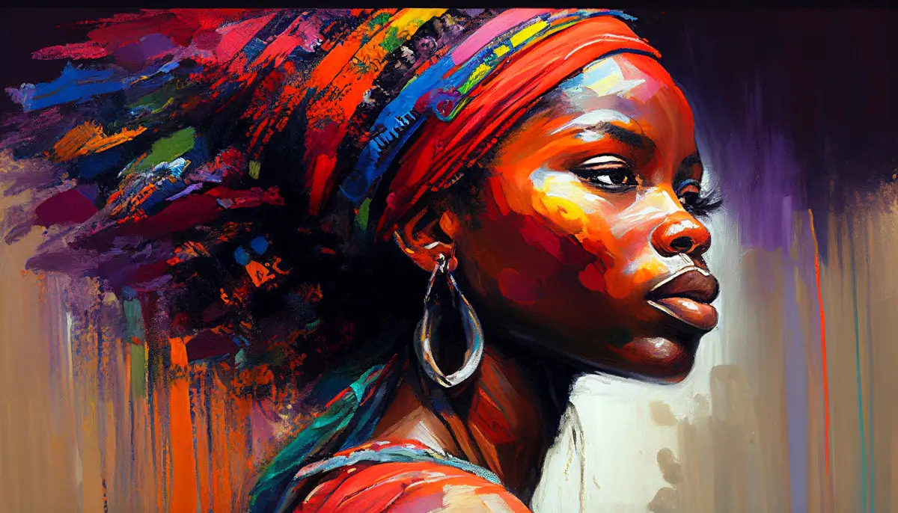
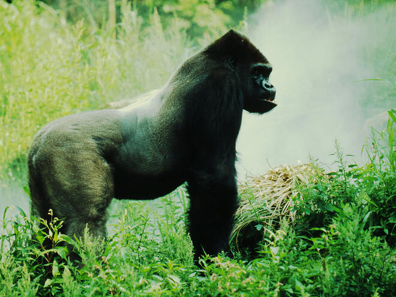
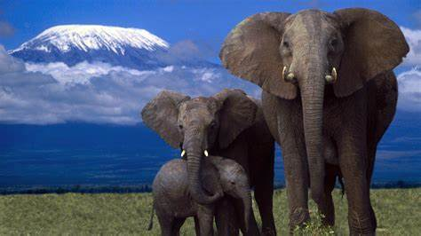

Past and Present
Africa is the second largest continent by population, second to Asia, with 54 countries and over 1.5 billion people and also considered the hottest and driest continent in the world. It is surrounded by the Atlantic Ocean to the East and Indian to the West and also believed to be the first home to human existence, culturalization, colonization, Trans-Atlantic slave trade and the Apartheid.
"The man who kills the animals today is the man who kills the people who get in his way tomorrow" -Dian Fossey
Africa has inspired some of the strongest, most inspirational people in the world. Dian Fossey, a brilliant primatologist who gave her life to research the Mountain Gorillas and fight against poachers of African Wildlife, Nelson Rolihlahla Mandela served as the first black South African President for 5 years and was considered the world's most famous political prisoner and Graca Machel, one of the most powerful African women, politician and humanitarian in history from Mozambique, starting as a school teacher.
"The struggle of today is not altogether for today - it is for a vast future also."-Graca Machel
Even though Africa is a continuous fight against turmoil, greed and corruption, it has created some of the most powerful connections between humankind within itself and within mother nature and is also home to the some of the world's most exotic wildlife and diverse landscapes.
"It always seems impossible until it's done" -Nelson Mandela